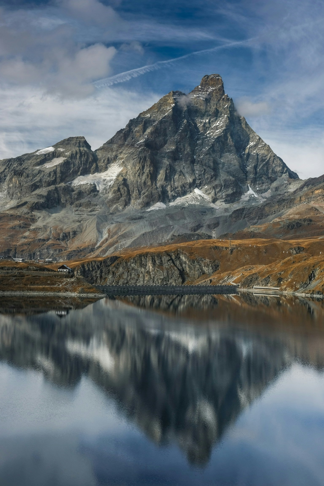

Un globo aerostático es una aeronave que se eleva gracias al aire caliente contenido en su envoltura, siguiendo el principio de flotabilidad. Su estructura principal consta de una gran bolsa de tela resistente, un quemador que calienta el aire en su interior y una cesta donde viajan los pasajeros. A diferencia de otros medios de transporte aéreo, el globo no cuenta con un sistema de dirección, por lo que su desplazamiento depende de los vientos a diferentes altitudes. Inventado en 1783 por los hermanos Montgolfier, fue la primera forma de vuelo tripulado de la historia. En la actualidad, se utiliza principalmente con fines recreativos, turísticos y publicitarios, así como en investigaciones científicas y meteorológicas.
Un globo aerostático es una aeronave que se eleva gracias al aire caliente contenido en su envoltura, siguiendo el principio de flotabilidad. Su estructura principal consta de una gran bolsa de tela resistente, un quemador que calienta el aire en su interior y una cesta donde viajan los pasajeros. A diferencia de otros medios de transporte aéreo, el globo no cuenta con un sistema de dirección, por lo que su desplazamiento depende de los vientos a diferentes altitudes. Inventado en 1783 por los hermanos Montgolfier, fue la primera forma de vuelo tripulado de la historia. En la actualidad, se utiliza principalmente con fines recreativos, turísticos y publicitarios, así como en investigaciones científicas y meteorológicas.  Una montaña es una elevación natural del terreno que se forma a lo largo de millones de años debido a procesos geológicos como el movimiento de las placas tectónicas, la erosión y la actividad volcánica. Suelen presentar pendientes pronunciadas y cimas elevadas, influyendo en el clima y los ecosistemas de su entorno.
Una montaña es una elevación natural del terreno que se forma a lo largo de millones de años debido a procesos geológicos como el movimiento de las placas tectónicas, la erosión y la actividad volcánica. Suelen presentar pendientes pronunciadas y cimas elevadas, influyendo en el clima y los ecosistemas de su entorno.  Además, las montañas han sido testigos de la historia humana, sirviendo como refugios naturales, fuentes de recursos y destinos de exploración y aventura. Desde el majestuoso Himalaya hasta los imponentes Alpes, estas elevaciones continúan siendo símbolos de desafío, belleza y conexión con la naturaleza.
- Montaña
- Nube
- Tierra
- Paisaje
- Frio
Sin embargo, el impacto del cambio climático y la actividad humana amenazan su equilibrio ecológico, poniendo en riesgo tanto a sus ecosistemas como a las comunidades que dependen de ellas. A lo largo de la historia, las montañas han representado un desafío para los exploradores y montañistas que buscan alcanzar sus cimas. También han sido esenciales para el desarrollo humano, ya que proveen recursos como agua.
A lo largo de la historia, las montañas han representado un desafío para los exploradores y montañistas que buscan alcanzar sus cimas. También han sido esenciales para el desarrollo humano, ya que proveen recursos como agua.
Una montaña es una elevación natural del terreno que se forma a lo largo de millones de años debido a procesos geológicos como el movimiento de las placas tectónicas, la erosión y la actividad volcánica. Suelen presentar pendientes pronunciadas y cimas elevadas, influyendo en el clima y los ecosistemas de su entorno.
- Monte Everest
- Kanchenjuhnga
- Manaslu
- Nanga Parbat
- Kilimanjaro
El sol dorado se desliza lentamente por el horizonte, tiñendo el cielo de pinceladas anaranjadas y rosadas. Las montañas, imponentes y silenciosas, se alzan en la distancia, con sus cumbres cubiertas de un velo de neblina que danza con la brisa. Un río serpentea entre los valles, reflejando los colores del atardecer en su superficie cristalina, mientras los árboles susurran con el vaivén del viento. En la lejanía, el canto de los pájaros se mezcla con el murmullo del agua, creando una melodía serena que envuelve el paisaje en una paz infinita.